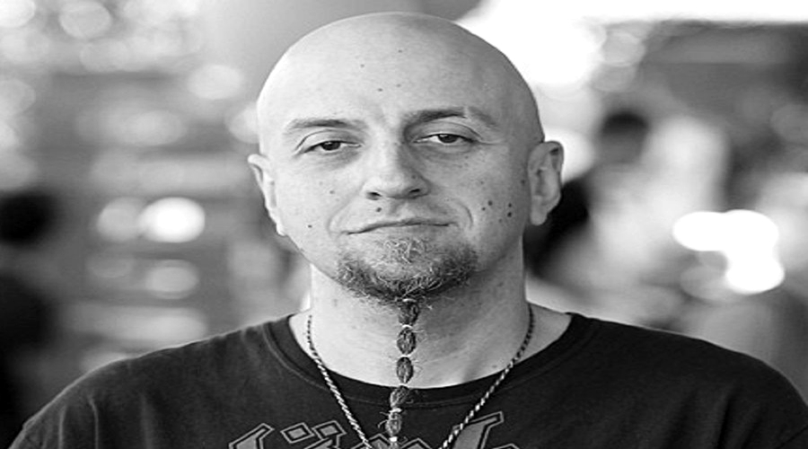

membros
Serj Adam Tankian
Nascimento: 21 de agosto de 1967 (51 anos)
Local de nascimento: Beirute - Líbano
Função: Vocalista
Redes Sociais

Daron Vartan Malakian
Nascimento: 18 de julho de 1975 (43 anos)
Local de nascimento: Califórnia - Estados Unidos
Função: Guitarrista
Redes Sociais

Shavarsh Odadjian
Nascimento: 22 de abril de 1974 (44 anos)
Local de nascimento: Yerevan - Armênia
Função: Baixista
Redes Sociais
John William Dolmayan
Nascimento: 15 de julho de 1972 (46 anos)
Local de nascimento: Beirute - Líbano
Função: Baterista
Redes Sociais